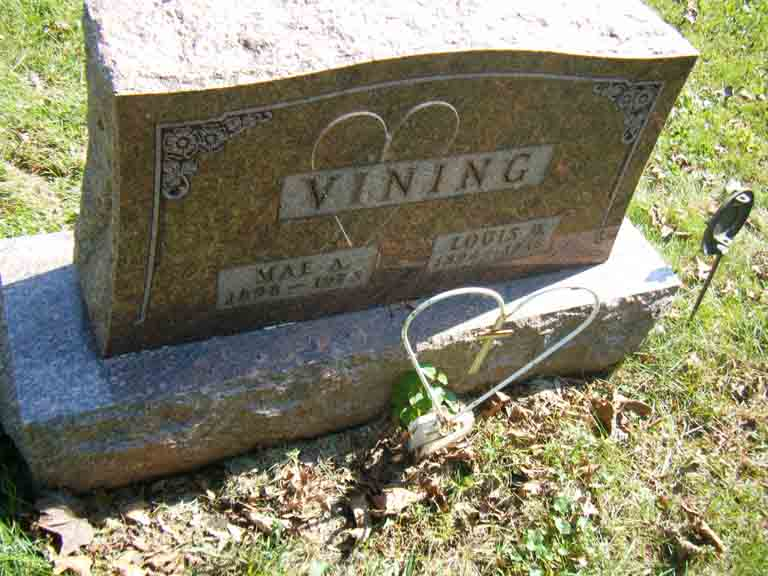

Census Data
| 1920 | 1930 | 1940 | |
| Louis D. Vining | 25 | 35 | 45 |
| Mae A. ([…]) Vining | 21 | 31 | 41 |
| Louise Vining | 8 | 18 | |
| Alberta Lou Vining | 1 y., 10 m. | 11 | |
| Louis D. Vining Jr. | 7 |


Death Data
Headstone for Louis D. Vining and Mae A. ([…]) Vining, in New Altoona Cemetery, Altoona, Polk County, Iowa (from Find A Grave):